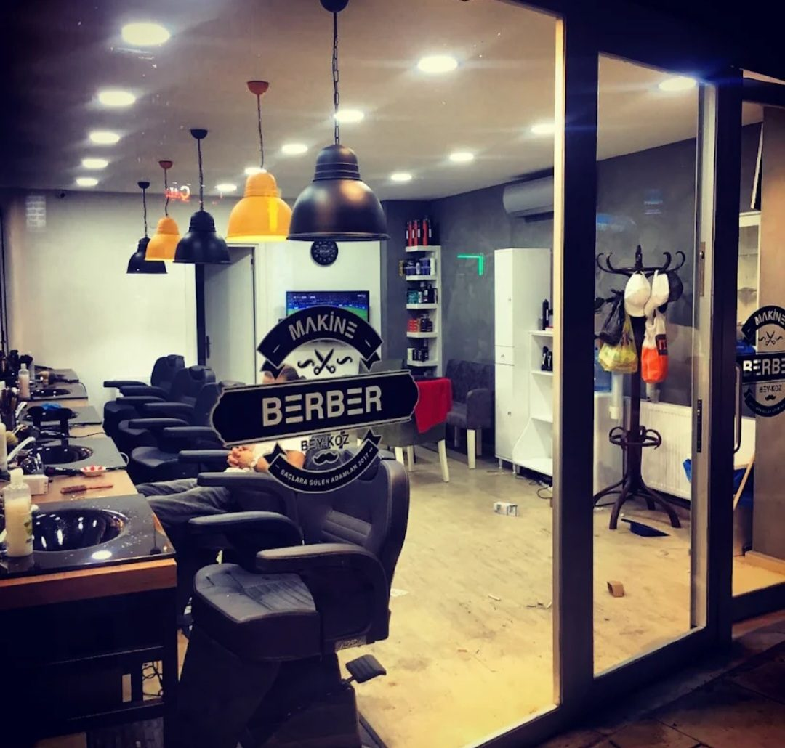
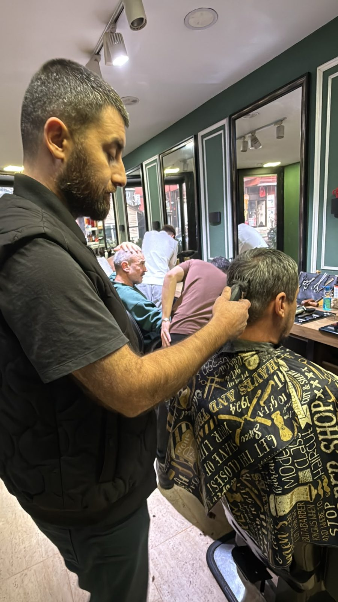
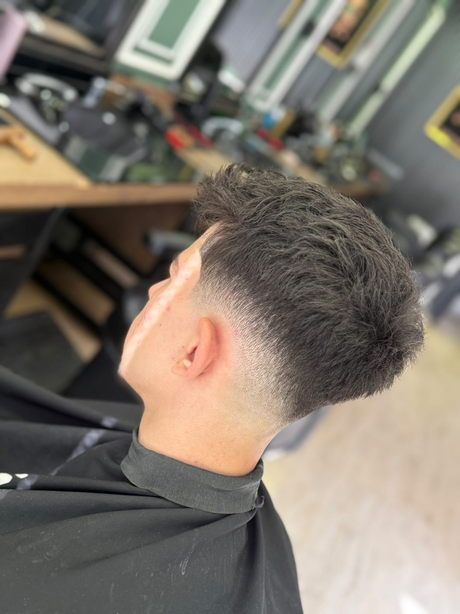
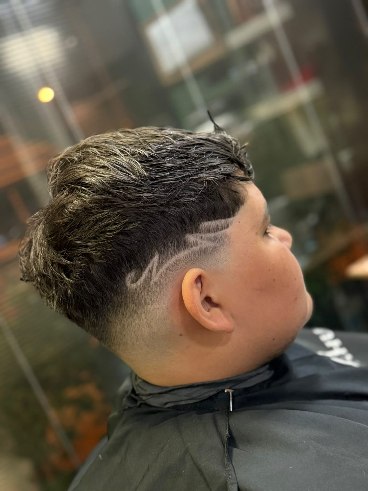

Anlayışımız
“Ustalık, özen ve güven bir arada.”
Her kesim, yüz hatlarınıza ve tarzınıza göre tasarlanır. Makine ve makası birlikte kullanır; klasik ve modern kesimde, fade geçişte, sakal ve kontürde aynı özeni gösteririz.
Kullandığımız aletlerin hijyenine ve sterilizasyonuna önem veririz; koltuğa oturduğunuzda içiniz rahat olsun.
Ramazan Gültekin, Profesyonel Berber Ustası

Ekibimiz
Her ustanın kendi eli ve stili var.

Ramazan Gültekin
Profesyonel Berber Ustası
“Ustalık, özen ve güven bir arada.”
Klasik ve modern kesim, makine ve makas işçiliği, fade geçiş, sakal ve kontür; yüz hatlarına uygun tasarım.
Muhammet Oral
Berber Ustası · Kişiye Özel Stil ve Bakım
“Tarzını keşfet, farkını yansıt.”
Modern ve klasik tasarım, fade, sakal tasarımı ve detaylı kontür.
Yusuf Gültekin
Yeni nesil berber
“Your hair. Your rules. Your style.”
Modern fade, trend kesimler, textured cuts, sakal ve kontür; kişisel stil.
Bekir Bozkurt
Geleneksel Berber Ustası
“Eski usul ustalık, her zaman geçerli değerler.”
Klasik erkek tıraşı ve geleneksel sakal tıraşı; özenli işçilik, hijyen ve samimi esnaflık.
Randevu nasıl alınır?
Bekleme yok, sürpriz yok. Üç adım.
Yazın
WhatsApp'tan hangi hizmeti ve hangi günü istediğinizi yazın.
Saatinizi seçin
Size boş saatleri söyleriz; uygun olanı seçersiniz.
Gelin
Saatinizde koltuğunuz hazır. Gelemeyecekseniz haber vermeniz yeter.
Dükkândan
Ustalarımızın elinden çıkan kesimlerden.


İletişim
- Adres
- Sultan Aziz Cd., Tokatköy
34825 Beykoz / İstanbul
Haritada aç → - Telefon / WhatsApp
- 0542 243 20 29
- Çalışma saatleri
Pazartesi – Cumartesi 08:00 – 23:00 Pazar Kapalı